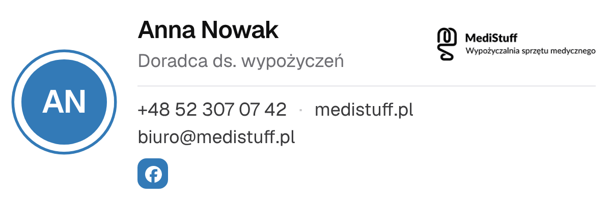

Stopka próbna dla MediStuff
Zrobiona w Footlerze, w kolorach i z logo MediStuff. Dane osoby są przykładowe.
Anna Nowak · Re: Wypożyczenie łóżka rehabilitacyjnego
Dzień dobry,
potwierdzam rezerwację łóżka od poniedziałku. Dostawę i montaż umówimy telefonicznie.
Pozdrawiam serdecznie

Co jest w stopce
- Wzór „Rysowany okrąg”: obwódka wokół zdjęcia rysuje się po otwarciu maila. Ruch jest spokojny i pasuje do branży medycznej.
- Kolor i logo z medistuff.pl, link do strony i do profilu na Facebooku.
- Kliknięcie w stopkę otwiera wizytówkę osoby z przyciskiem „Zapisz kontakt”.
- Dla 5 osób: jeden wzór dla całej firmy, każda osoba ma w nim swoje imię, stanowisko, telefon i zdjęcie.